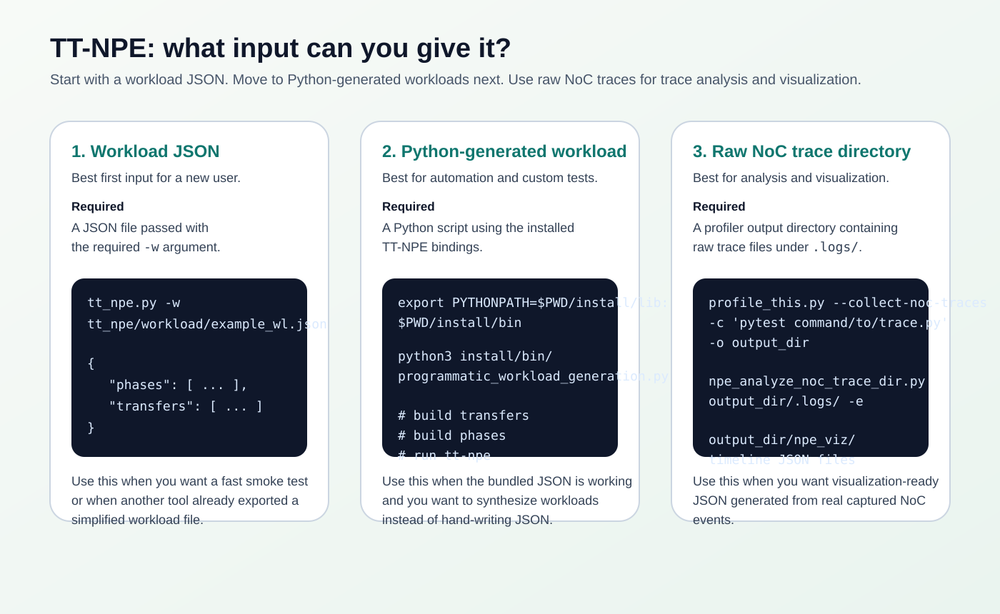
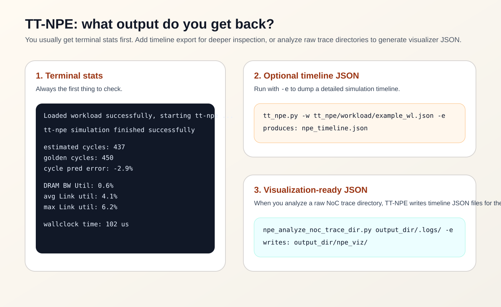
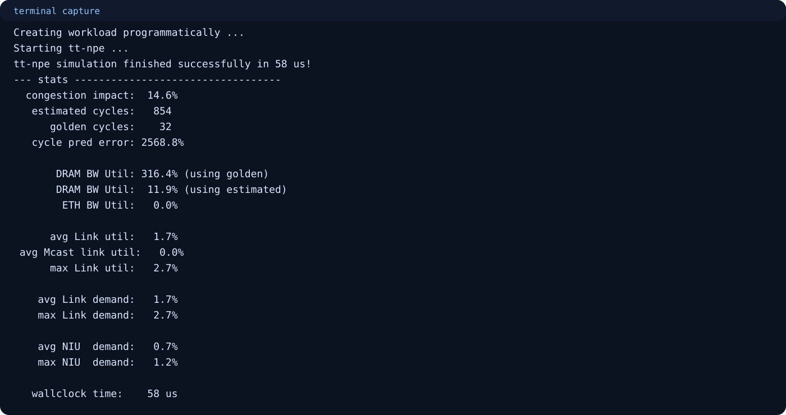
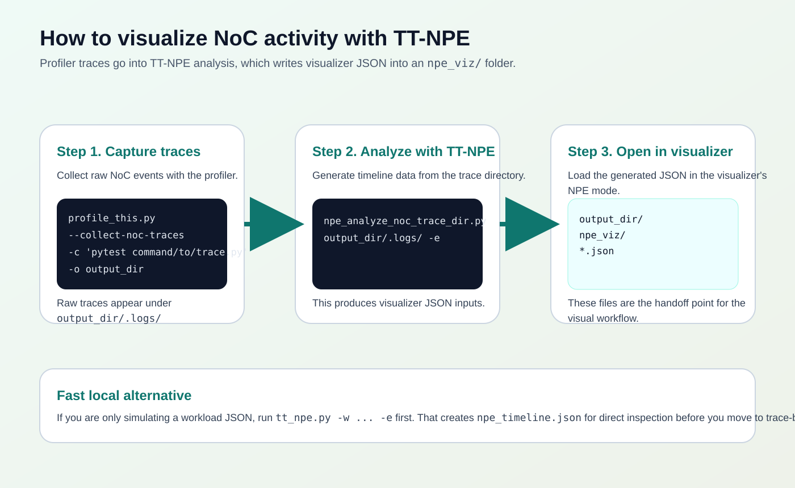

TT-NPE practical guide based on upstream examples and Linux tester output from 2026-04-06
TT-NPE Practical Example Manual
Learn the real workflow: what input to give tt-npe, what output files come back, and which
files are used when you want to visualize NoC activity.
Workload JSON
Python-generated workload
Raw NoC trace directory
Understand outputs and visualization
Input Types

Use
tt_npe.py -w path/to/workload.json for the fastest path.Use the Python bindings when you want scripted workload generation.
Use
npe_analyze_noc_trace_dir.py ... -e to generate visualization-ready JSON.Raw NoC Trace Format Notes
The upstream noc_trace_format.md document describes the raw trace JSON family that
tt-npe consumes when the input comes from captured device traces rather than a synthetic
workload JSON.
Profiler capture stores raw NoC trace JSON under folders such as
output_dir/.logs/.Those files are capture artifacts, not the final JSON consumed by the visualizer.
tt-npe analyzes the raw trace directory and emits NPE-oriented timeline JSON.Output Types

Example 1: Bundled Workload JSON
tt_npe.py -w tt_npe/workload/example_wl.json
If you want the explicit form instead of relying on ENV_SETUP:
python3 install/bin/tt_npe.py -w tt_npe/workload/example_wl.json

Example 2: Programmatic Python Workload
export PYTHONPATH=$PWD/install/lib:$PWD/install/bin python3 install/bin/programmatic_workload_generation.py

Example 3: Export A Timeline File
tt_npe.py -w tt_npe/workload/example_wl.json -e
This keeps the same input but adds a detailed timeline export. The default file is npe_timeline.json.
How To Visualize NoC Activity

output_dir/npe_viz/.npe_analyze_noc_trace_dir.py output_dir/.logs/ -e
ttnn-visualizer can display TT-NPE data, but the supported path is the NPE-ready output:
load NPE data on the /npe route or open a profiler/performance report folder that contains
the generated npe_viz subdirectory. Raw .logs/ trace files are the capture
input, not the final visualizer-ready payload.